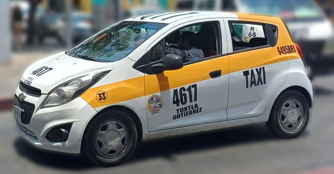
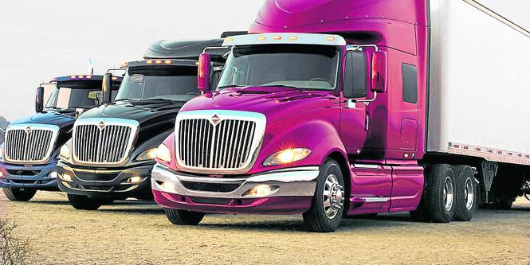
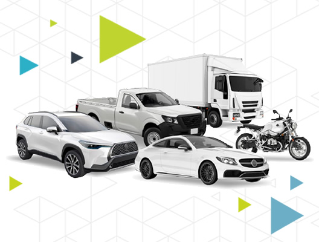
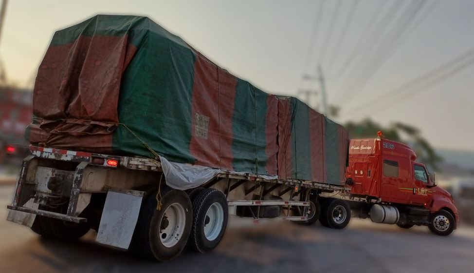
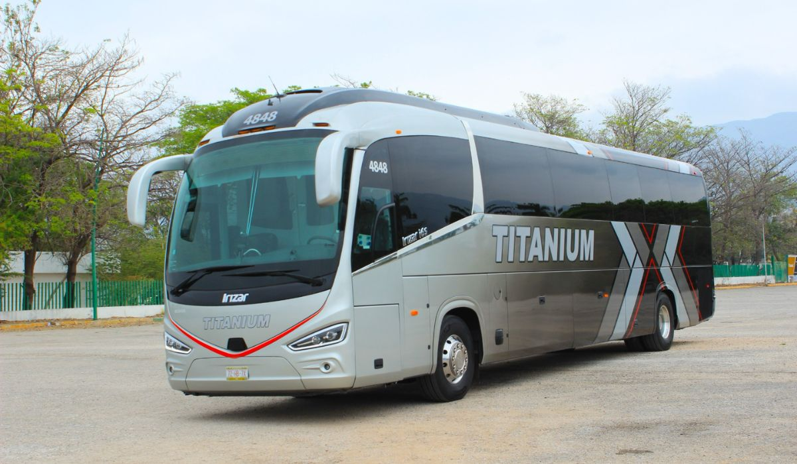
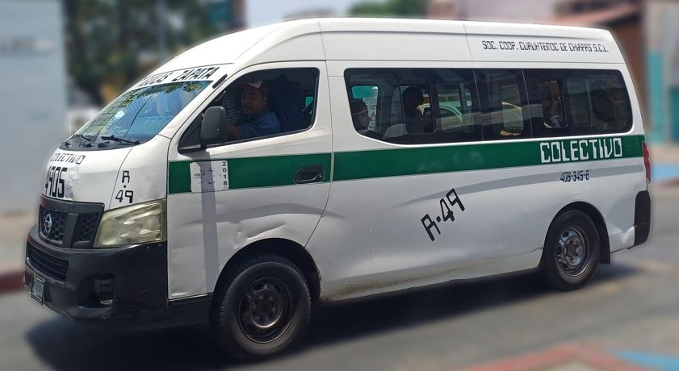

Vehículos Asegurados
Cobertura especializada para cada categoría de transporte público y comercial.

Taxis
El seguro para taxi es una obligación legal y una necesidad real. Cubrimos tanto el vehículo como la responsabilidad civil ante pasajeros y terceros, con planes adaptados a taxis de sitio, plataformas digitales y concesionados.
Riesgos comunes
- Accidentes en ciudad
- Robo en zonas de riesgo
- Lesiones a pasajeros
- Daños a terceros
Coberturas sugeridas
- Responsabilidad civil ampliada
- Seguro de pasajeros
- Daños materiales
- Asistencia legal vial

Tráilers y Camiones de Carga
Los vehículos de carga representan una inversión elevada y operan en rutas de alto riesgo. Nuestros planes cubren el equipo, la mercancía, la responsabilidad ante terceros y los incidentes en carretera federal.
Riesgos comunes
- Accidentes en carretera
- Robo de carga y vehículo
- Volcaduras y siniestros
- Daños a infraestructura
Coberturas sugeridas
- Cobertura amplia
- Protección de carga
- RC ampliada federal
- Asistencia vial 24/7

Automóviles
Para vehículos de uso particular o servicio privado, ofrecemos planes desde la cobertura básica de responsabilidad civil hasta la cobertura amplia más completa, con la mejor relación precio-beneficio del mercado.
Riesgos comunes
- Colisiones urbanas
- Robo de vehículo
- Fenómenos naturales
- Actos vandálicos
Coberturas sugeridas
- Daños materiales
- Robo total
- RC ilimitada
- Gastos médicos

Grúas
Las grúas de arrastre y plataforma operan en condiciones de alto riesgo: rutas nocturnas, vehículos de terceros y carreteras congestionadas. Protegemos tanto el vehículo de arrastre como los bienes que transporta.
Riesgos comunes
- Daños al vehículo arrastrado
- Accidentes en maniobra
- Choques traseros
- RC por carga en tránsito
Coberturas sugeridas
- RC ampliada especial
- Daños a vehículo remolcado
- Cobertura de grúa
- Asistencia legal

Transporte Turístico de Pasajeros
Los autobuses y vehículos de turismo requieren coberturas especiales que protejan a los pasajeros, su equipaje y la responsabilidad civil ampliada que exige este tipo de servicio.
Riesgos comunes
- Accidentes con pasajeros
- Daños a equipaje
- Siniestros en carretera
- Responsabilidad por turistas
Coberturas sugeridas
- Seguro colectivo de pasajeros
- Cobertura de equipaje
- RC turística ampliada
- Asistencia médica inmediata

Urvans y Vans de Pasajeros
Las urvans y camionetas colectivas requieren planes específicos por la cantidad de pasajeros que transportan y su operación en rutas urbanas e interurbanas de alta demanda.
Riesgos comunes
- Colisiones en rutas urbanas
- Lesiones a pasajeros
- Robo en terminales
- Daños a terceros
Coberturas sugeridas
- RC por pasajero ampliada
- Seguro de ocupantes
- Cobertura a daños propios
- Asistencia vial urbana